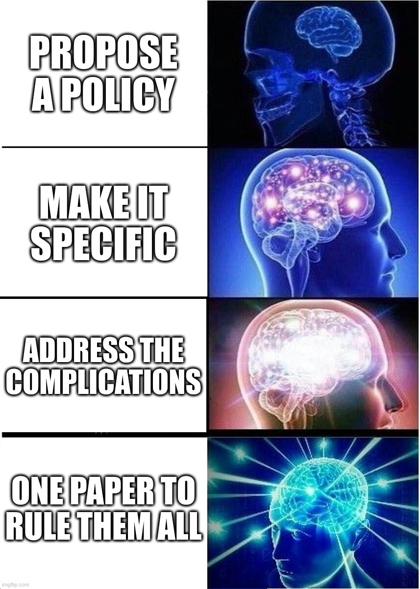
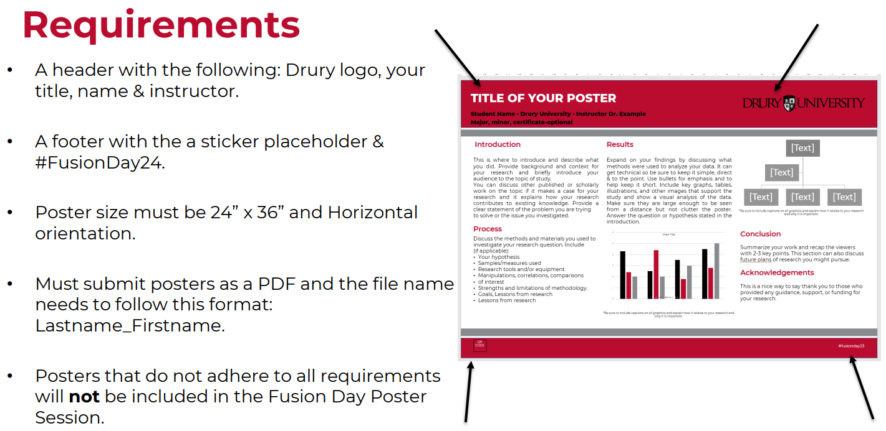
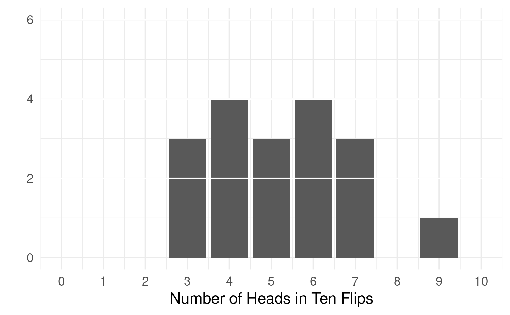
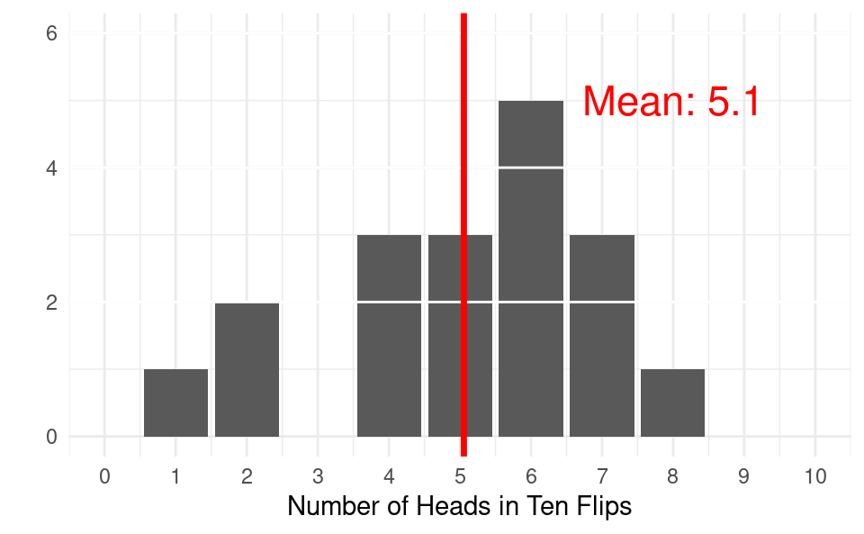
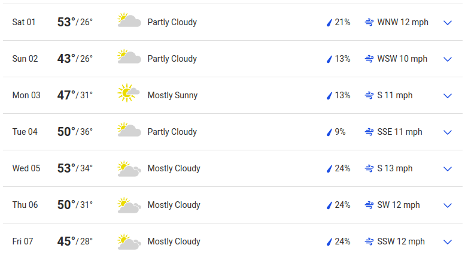
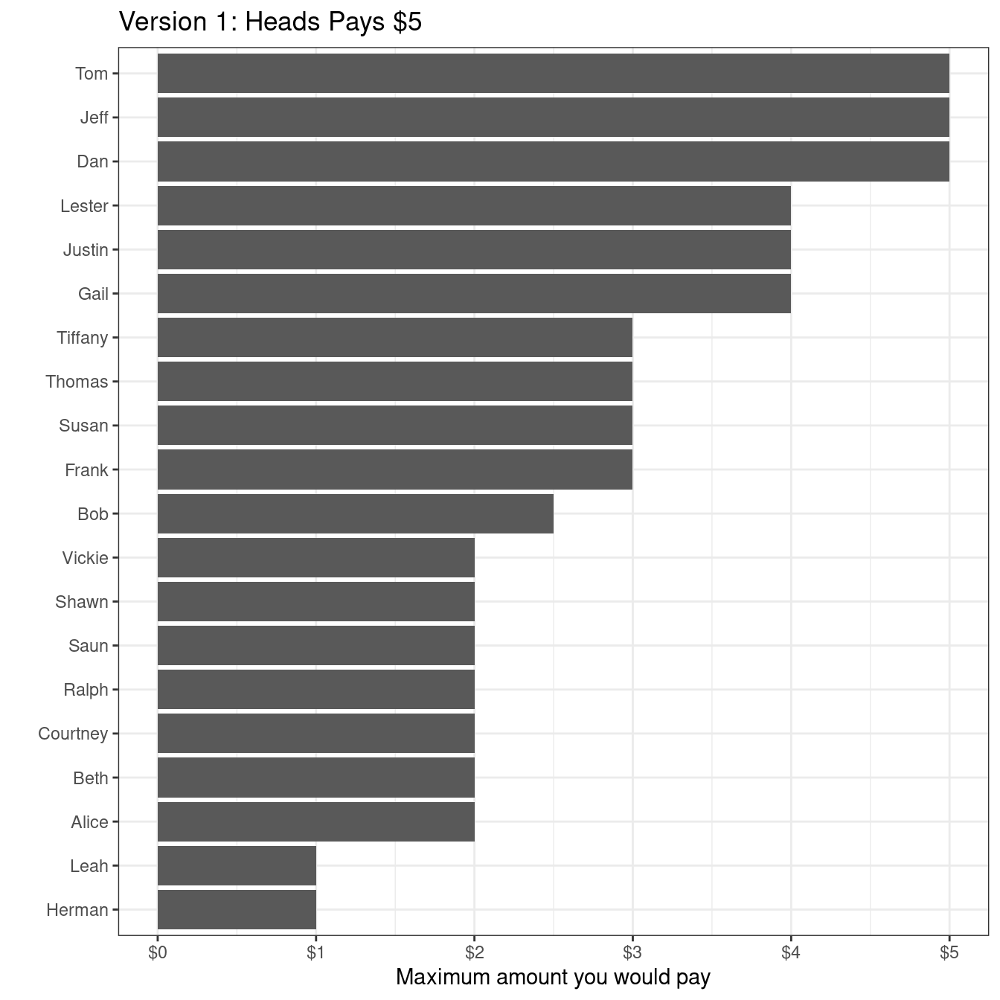
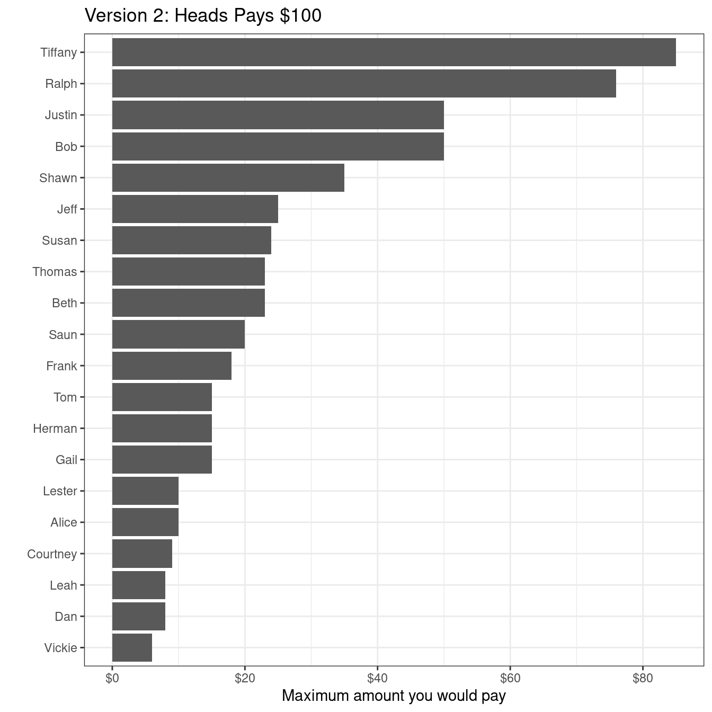
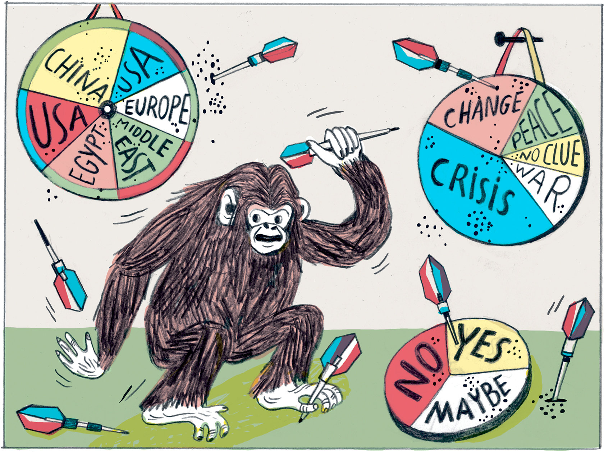

Today’s Agenda
III. Designing an Environmental Policy
- Complications 1: Risk Aversion / Acceptance
Justin Leinaweaver (Spring 2024)
Fusion Poster Due Thursday

The Development of your Project
Mapped the impact of a problem on our community
Applied that map to four policy design options
Currently road testing your problem framing
Our Planned Policy-Making Process
Describe the problem facing our community
Investigate the relevant stakeholders
Frame the problem
Propose a policy
Assignment 5: Proposing a Policy
Propose a policy to address your selected environmental problem that balances the interests of the relevant stakeholders against the constraints of established institutions and uncertainty.
Final proposal should be a complete, stand-alone policy proposal
A convincing policy proposal:
Advances your policy recommendation in EVERY paragraph,
Includes a clear and compelling problem definition,
Identifies and appeals to specific stakeholders,
Considers the complications, and
Offers guidance for measuring its effectiveness over time.
Complicating Factors to Consider When Designing Your Policy
Risk aversion (or risk acceptance)
Temporal discounting and uncertainty
Collective action problems and free-riding
Inequality
Greenwashing



Let’s play a game!
Flip a fair coin ONE time
Heads pays you $5
Tails pays you nothing
Let’s play a game!
Flip a fair coin ONE time
Heads pays you $100
Tails pays you nothing




Ehrlich & Ehrlich (2008)
Too Many People, Too Much Consumption
Therefore, a combination of overpopulation and overconsumption has us on track for disaster
Ehrlich & Ehrlich (2008)
We are rapidly depleting the natural capital of the Earth
Damage = Population x Consumption x Technology
Population control is controversial
Overconsumption is complex and difficult to reduce
Technology improvements cannot save us
Therefore, a combination of overpopulation and overconsumption has us on track for disaster
Simon (1993)
Population Growth Is Not Bad for Humanity
Therefore, “the energetic effort of humankind will prevail in the future” over whatever environmental challenges we face.
Simon (1993)
Overpopulation hysteria is costly to society
Trusting markets means trusting that shortages produce innovation
The only limit to innovation is a shortage of people!
More people = Larger stock of human knowledge
Therefore, “the energetic effort of humankind will prevail in the future” over whatever environmental challenges we face.
Risk aversion and population growth
Ehrlich, P. & Ehrlich, A. (2008, August 4). Too Many People, Too Much Consumption. Yale Environment 360.
Simon, J. (1993). Population Growth Is Not Bad for Humanity. PRI Review, 3(6).
Complicating Factors to Consider When Designing Your Policy
How does risk aversion (or risk acceptance) complicate your efforts to address your specific environmental problem?